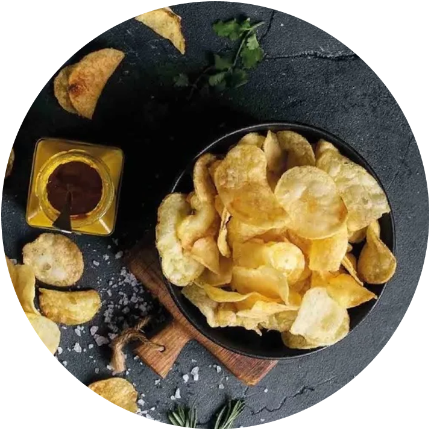
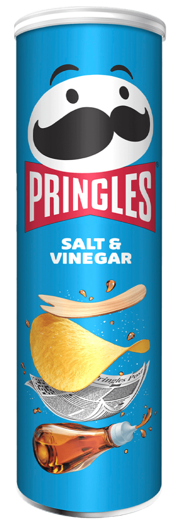
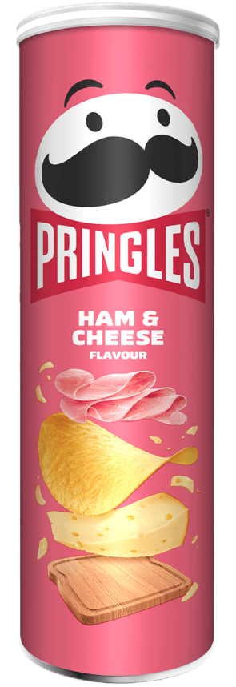
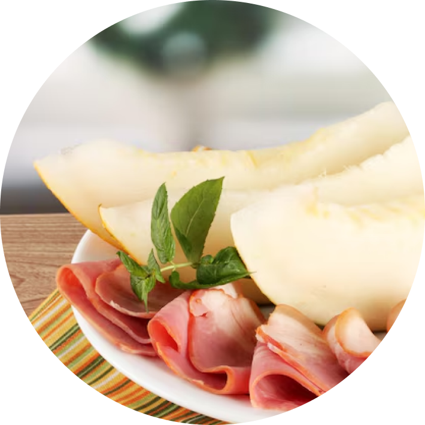
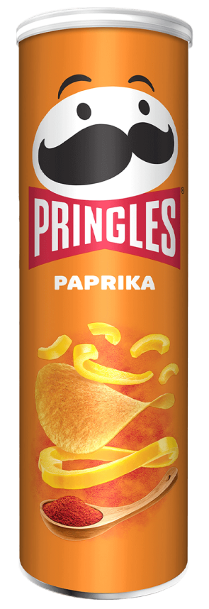
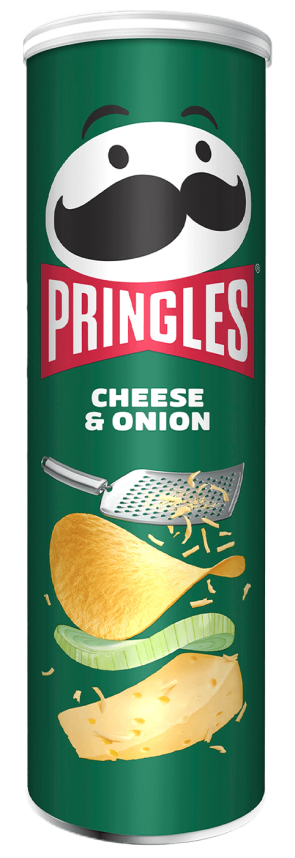
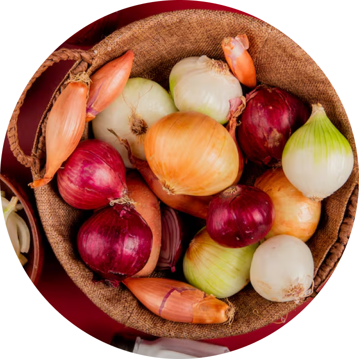

Salt e Vinegar
Com um pouco de vinagre e uma pitada de sal, prepare-se para uma explosão de sabor. E quando se der conta, vai querer muito mais!



Ham & Cheese
O simples que todo mundo ama. Explosão defumada combinada em cada mordida. O sabor é intenso e equilibrado, oferecendo crocância que você só encontra na Pringles.

Paprika
Uma experiência vibrante que combina a crocância clássica e o toque defumado e adocicado da páprica. É o equilíbrio perfeito entre um tempero rico e uma picância suave que desperta o paladar.


Cheese & Onion
Harmonia irresistível entre a cremosidade e o toque levemente aromático da cebola. O clássico sabor elevado à crocância perfeita, garantindo uma experiência equilibrada em cada batata.